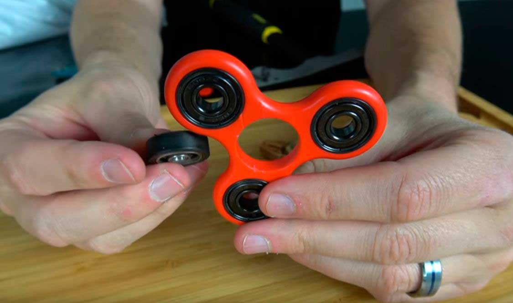
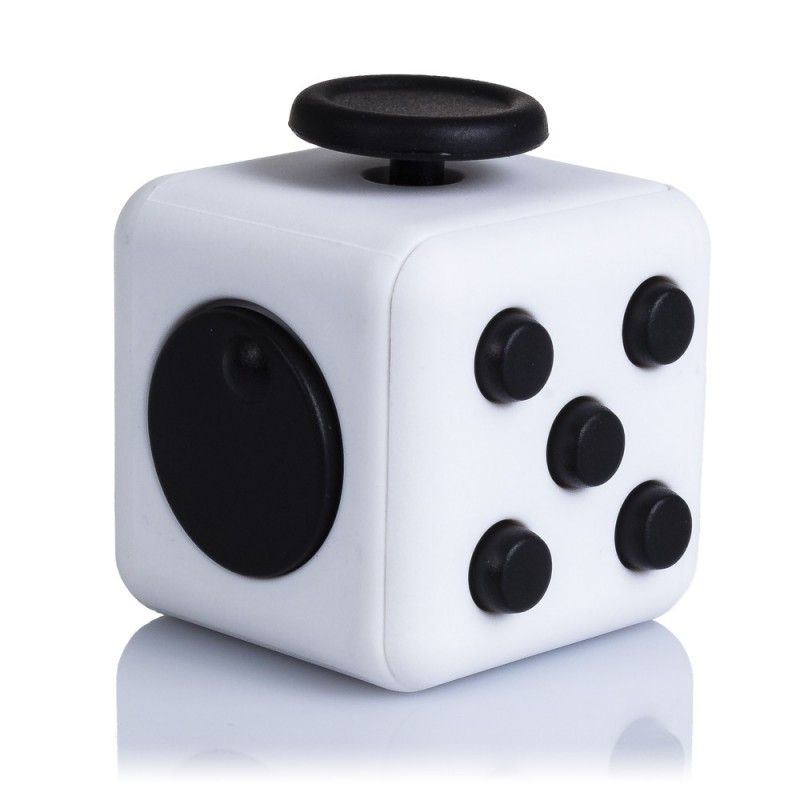
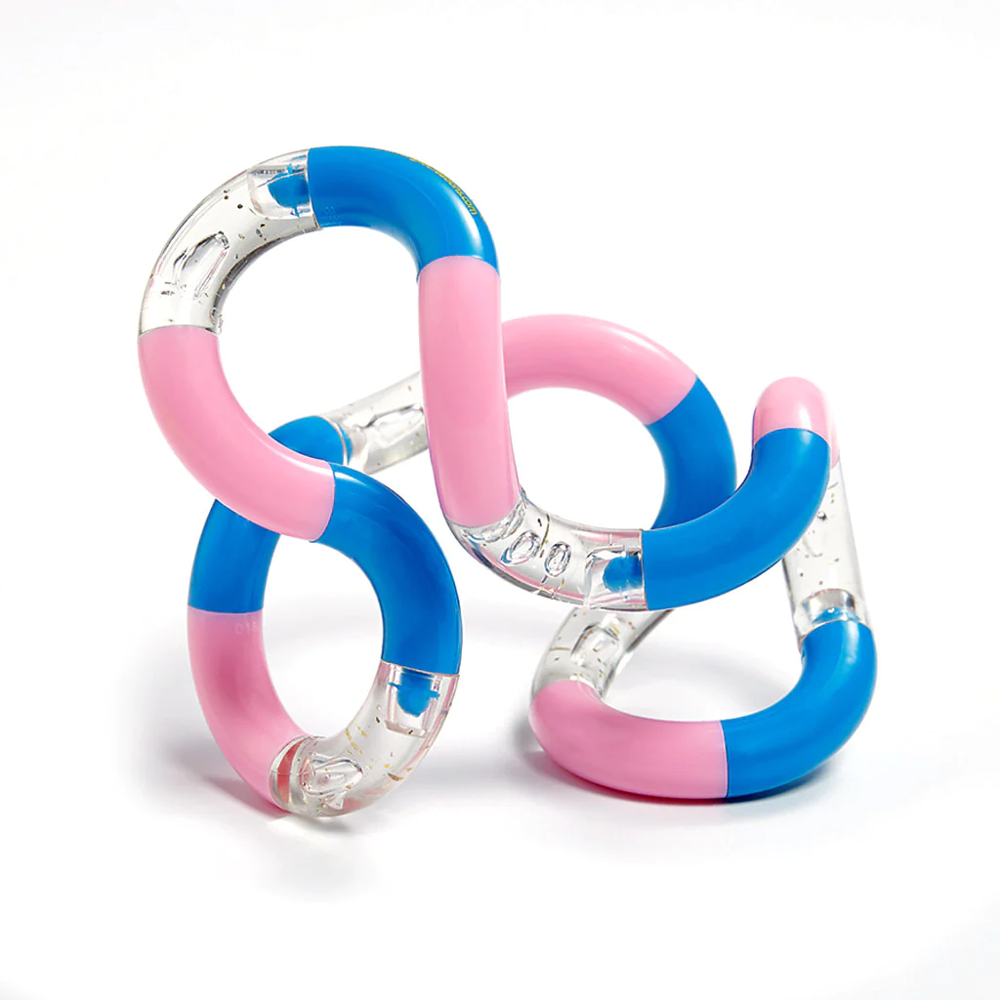
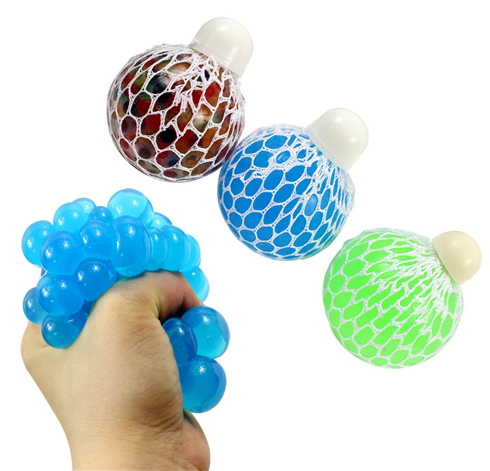
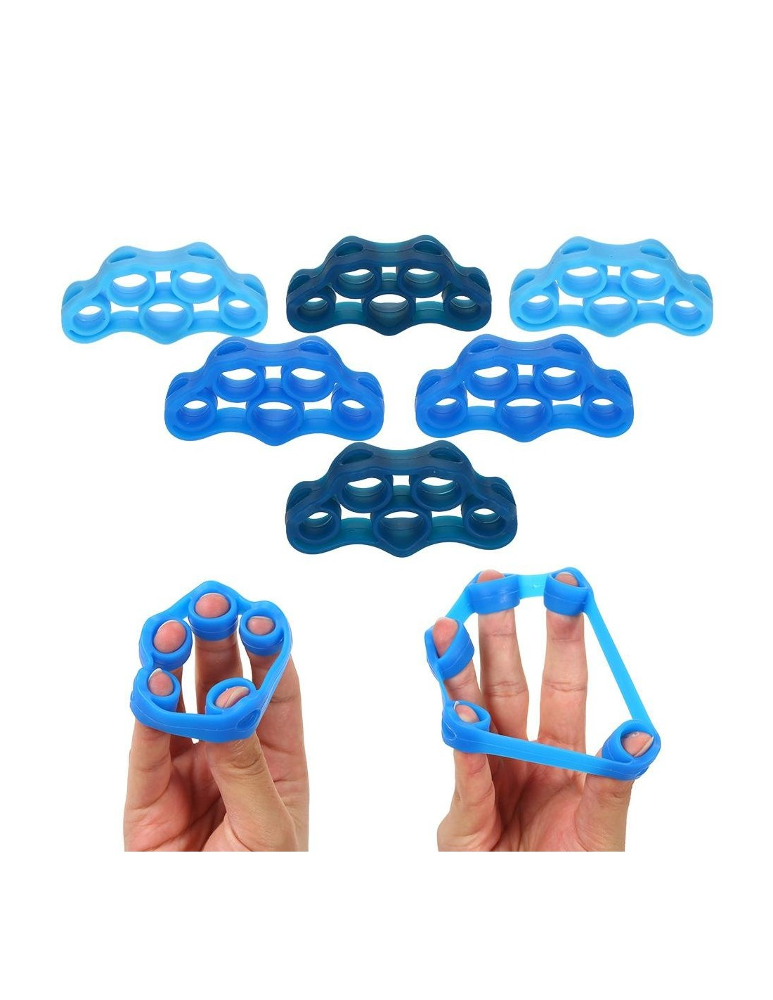
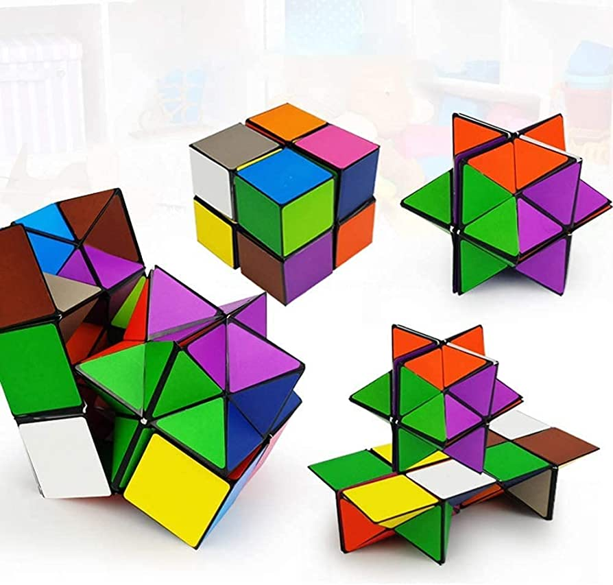
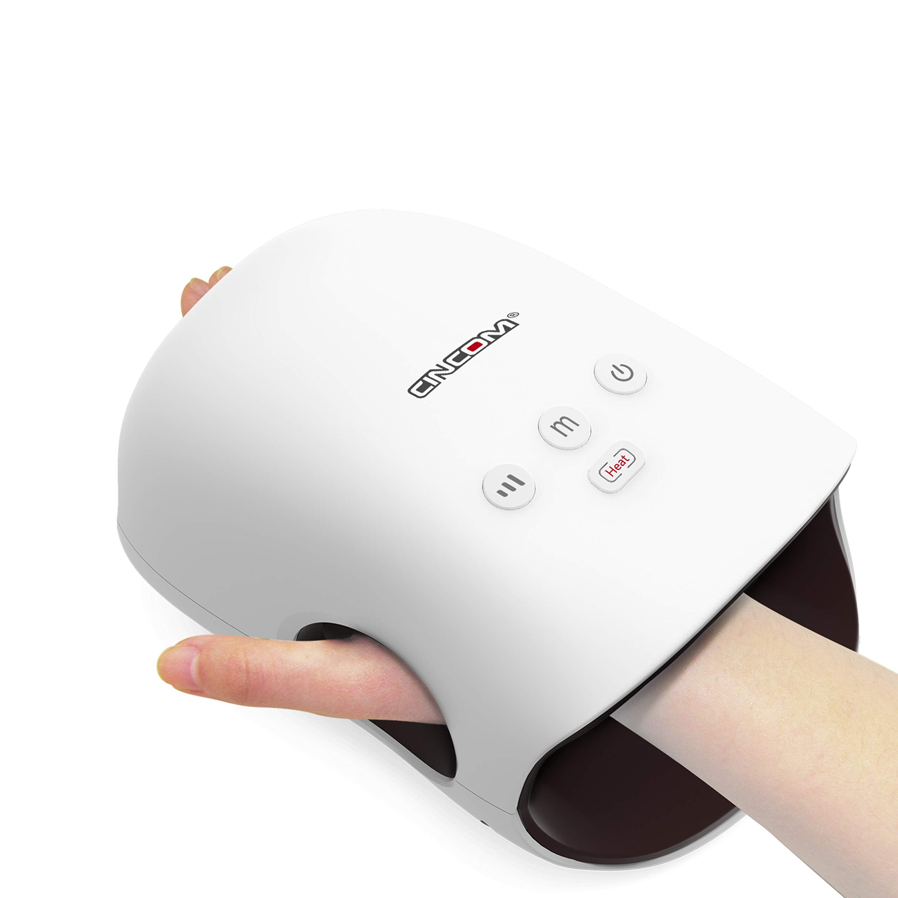

Spinner de mano: un pequeño dispositivo con rodamientos que puedes girar con los dedos. Puedes encontrarlos en diferentes diseños y materiales.
Cubo de fidget: un cubo pequeño con diferentes características en cada cara, como botones, interruptores, ruedas y joystick. Puedes jugar con los diferentes elementos para mantener tus manos ocupadas.
Tangle: un juguete formado por una serie de eslabones que se pueden girar, doblar y conectar entre sí. Es compacto y fácil de llevar contigo.
Bolas antiestrés: son pequeñas bolas hechas de goma o tela que puedes apretar y amasar para liberar la tensión.
Bandas elásticas para los dedos: son bandas de goma o tela que se colocan alrededor de los dedos y se pueden estirar y apretar para mantener las manos ocupadas.
Puzle 3D: un puzle en 3D que requiere que gires y muevas diferentes piezas para resolverlo. Puedes encontrar puzles de diferentes niveles de dificultad.
Masajeador de mano: un dispositivo pequeño que proporciona vibraciones y masajes en la mano para aliviar el estrés y la tensión.
